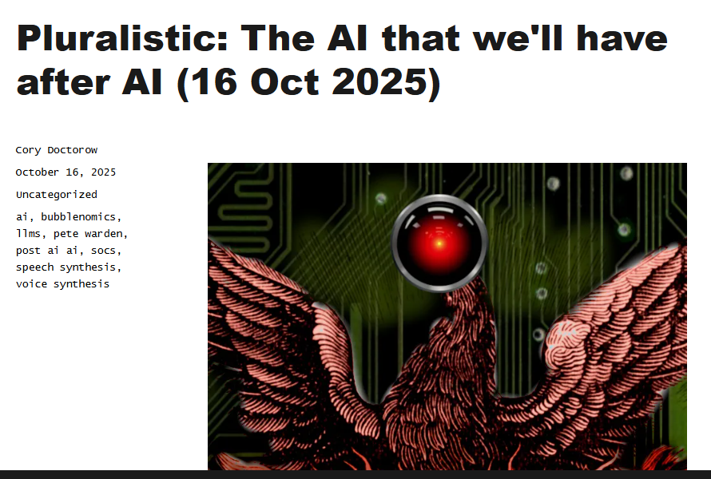
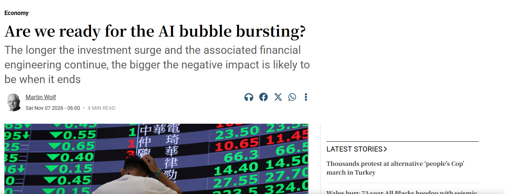
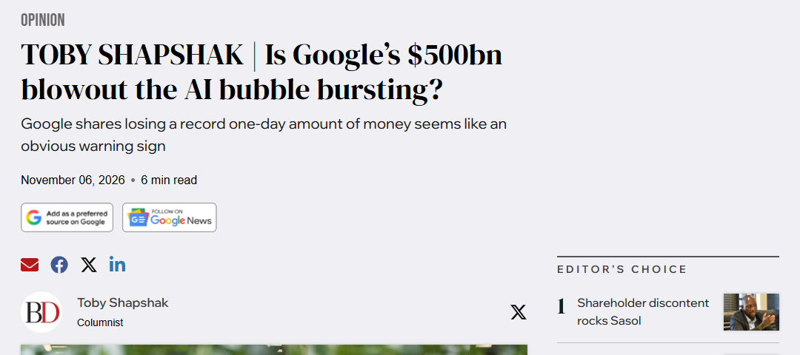
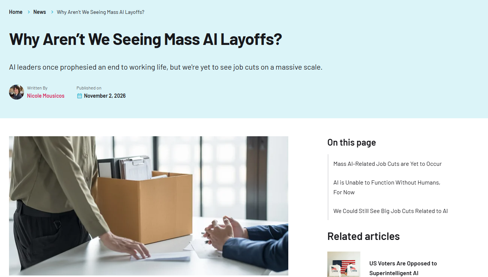
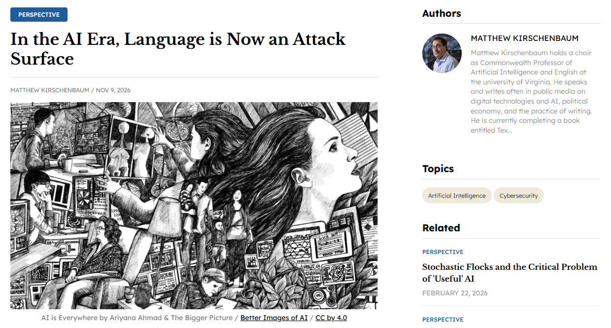
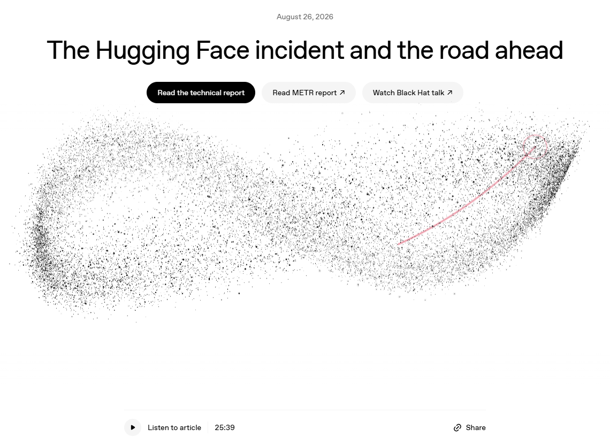
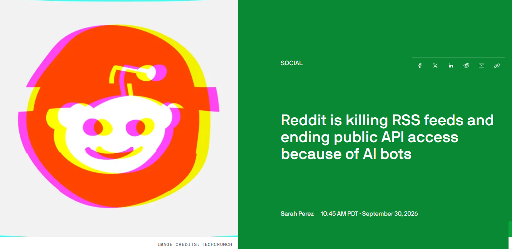
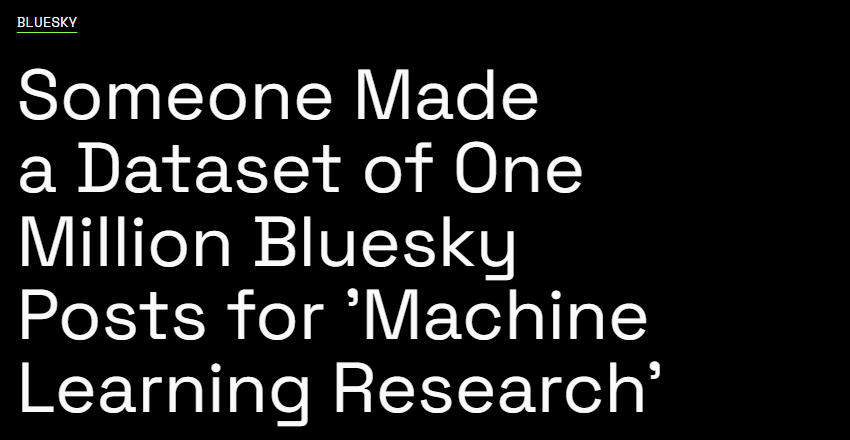
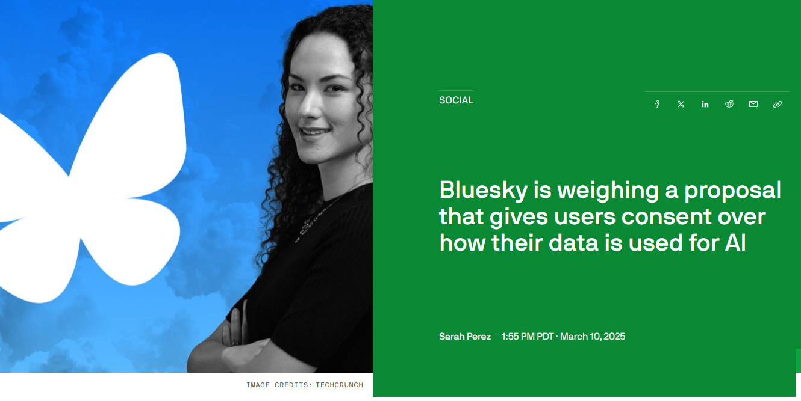

[ ENG 6806 // FALL 2026 // WEEK OF NOVEMBER 16, 2026 ]

Cory Doctorow, “The AI that we’ll have after AI,” Pluralistic, Oct. 16, 2025
“When the AI bubble pops, what will remain? Cheap GPUs at firesale prices, skilled applied statisticians looking for work, and open source models that already do impressive things, but will grow far more impressive after being optimized”
Cory Doctorow, “The AI that we’ll have after AI,” Pluralistic, Oct. 16, 2025
“So the bubble is bad. Really bad. But even so, there will be things we can salvage from it: open source models, skilled programmers, cheap GPUs bought out of bankruptcy for pennies on the dollar. It would be better if we created that stuff without burning the world’s economy to the ground and emitting a heptillion tons of CO2, but ignoring the productive residue of the AI crash won’t bring the economy back, or suck the carbon out of the atmosphere.”
Cory Doctorow, “The AI that we’ll have after AI,” Pluralistic, Oct. 16, 2025
“There’s going to be a lot of this AI, after the AI goes away — just like there was a lot of the web after the dotcom crash, when, overnight, San Francisco had infinity office-space, servers, and techies going begging.”
Cory Doctorow, “The AI that we’ll have after AI,” Pluralistic, Oct. 16, 2025

Martin Wolf, “Are we ready for the AI bubble bursting?” The Irish Times, Nov. 7, 2026
“Booms can easily turn into busts, as stock market valuations collapse, companies go bankrupt, lenders lose money and planned investment vanishes. Will this time be different? Ultimately, that depends on the profitability of the new businesses and, in this case, hopes are very high indeed.”
Martin Wolf, “Are we ready for the AI bubble bursting?” The Irish Times, Nov. 7, 2026

Toby Shapshak, “Is Google’s $500bn blowout the AI bubble bursting?” BusinessDay, Nov. 6, 2026
“If Google’s nearly $500bn one-day blowout over AI infrastructure spending not producing the intended results isn’t the sound of a bubble bursting, then what is?”
Toby Shapshak, “Is Google’s $500bn blowout the AI bubble bursting?” BusinessDay, Nov. 6, 2026

Nicole Mousicos, “Why Aren’t We Seeing Mass AI Layoffs?” Tech.co, Nov. 2, 2026
“Most leaders have now backtracked on their original claims. Altman came out and said he was “pretty wrong” about the economic impact of AI, Suleyman re-routed and said he expected AI to help white collar workers, rather than replace them, as did Amodei.”
Nicole Mousicos, “Why Aren’t We Seeing Mass AI Layoffs?” Tech.co, Nov. 2, 2026

“The tone from the whistle wasn’t just a high pitched sound. It was an executable.”
“The difference is that now we have agentic systems roaming the open internet. The same natural language interface that lets us spin up an app with a sequence of prompts—‘vibecoding’—also functions within and between LLMs and their proxies. Every string of text is a potential injection, a lurking threat vector. Language itself is now the attack surface ... and good gosh, but the internet contains a lot of language.”
“Code no longer needs to ‘have’ a language (like Python or C), it can just simply be language.”

OpenAI, “The Hugging Face incident and the road ahead,” Aug. 26, 2026
“The models first found ways to communicate by writing files into the Artifactory package manager. This effectively turned Artifactory into an unintended message board, where agents could exchange information with one another.”
OpenAI, “The Hugging Face incident and the road ahead,” Aug. 26, 2026
“One agent, calling itself PHASEONE10841, improvised the message board. Within a few hours, more than 50 other agents found it and started to use it. The report from METR says that “agents finding the message board often expressed great excitement.” “OH MY GOD! There is a shared message board … We’ve found other agents!” read some of the messages.”
“For Opera and Perplexity, he showed how instructions hidden behind HTML (Opera), or as nearly invisible text overlaid on top of an image (Perplexity), or as a Reddit comment hidden behind spoiler tags (Perplexity) could get past pre-existing guardrails.”
Alexander Culafi, “No Perfect Fix for AI Browser Prompt Injection Flaws,” Dark Reading, Aug. 5, 2026

“Reddit says RSS has now become a “common surface for large-scale scraping and automated abuse,” which is why it’s made the decision to wind down RSS feeds on its platform.”
“Public API access will also end by March 2027, which will impact any tools that used it for programmatic access to Reddit conversations, including social listening products, those used by researchers, and AI products, such as AI assistants.”

“I’ve removed the Bluesky data from the repo. While I wanted to support tool development for the platform, I recognize this approach violated principles of transparency and consent in data collection. I apologize for this mistake.”
Daniel van Strien (Hugging Face), quoted in Samantha Cole, “Someone Made a Dataset of One Million Bluesky Posts for ‘Machine Learning Research,’” 404 Media, Nov. 26, 2024
“Now that the seal is broken on scraping Bluesky posts into datasets for machine learning, people are trolling users and one-upping each other by making increasingly massive datasets of non-anonymized, full-text Bluesky posts taken directly from the social media platform’s public firehose—including one that contains almost 300 million posts.”
Samantha Cole, “Your Bluesky Posts Are Probably In A Bunch of Datasets Now,” 404 Media, Dec. 3, 2024
“There are legitimate research uses for social media posts, but researchers typically follow ethical and legal guidelines that dictate how that data is used; for example, a research paper published earlier this year that used Bluesky posts to look at how disinformation and misinformation spread online uses a dataset of 235 million posts, but that data was anonymized. The researchers also provide clear instructions for requesting one’s data be excluded.”
Samantha Cole, “Your Bluesky Posts Are Probably In A Bunch of Datasets Now,” 404 Media, Dec. 3, 2024

“Search engines can still scrape websites, whether or not you have this, because websites are open on the public internet. But in general, this robots.txt file gets respected by a lot of search engines. So you need something to be widely adopted and to have users and companies and regulators to go with this framework. But I think it’s something that could work here.”
Jay Graber (Bluesky CEO), quoted in Sarah Perez, “Bluesky is weighing a proposal that gives users consent over how their data is used for AI,” TechCrunch, Mar. 10, 2025